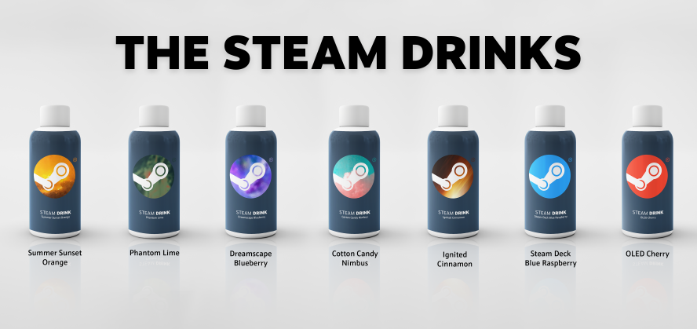
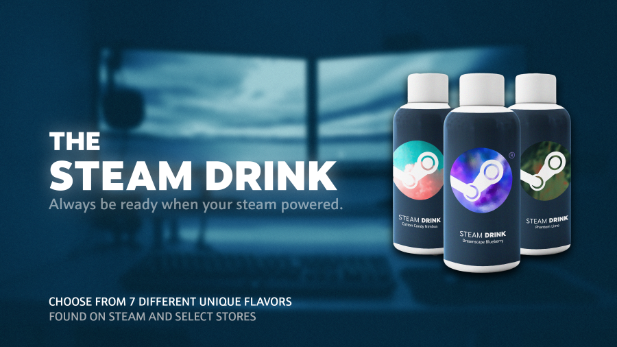
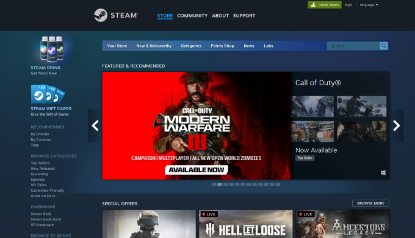
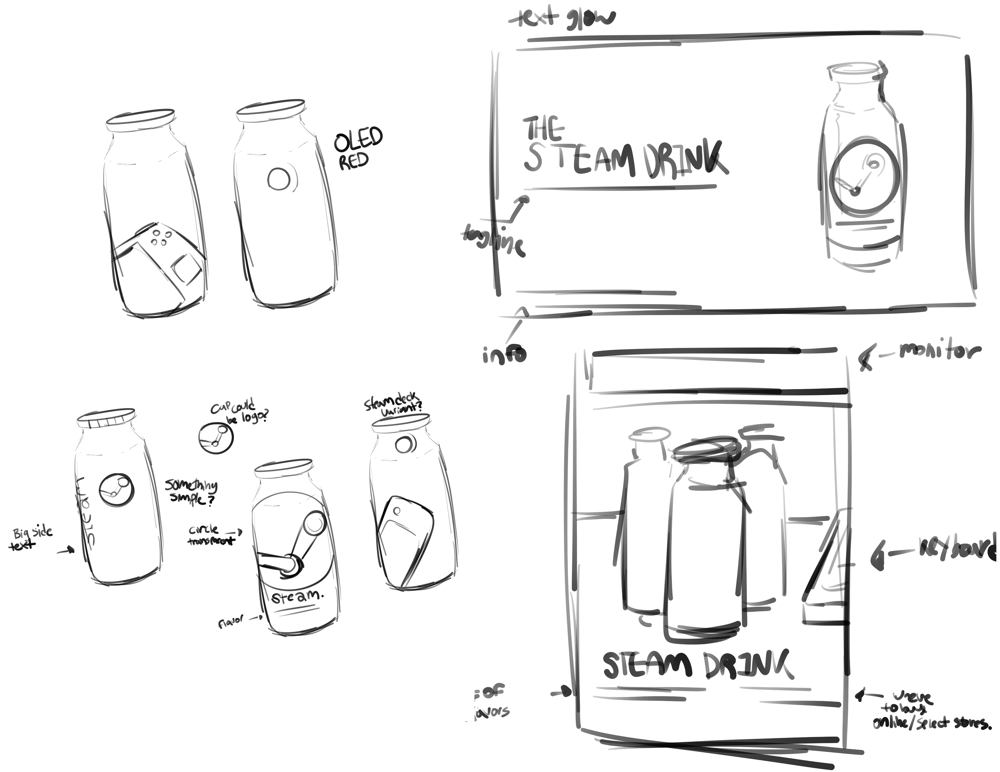

The Steam Drink is a product design project that was made during a course at UMass Dartmouth, with the goal of aligning with the brand ideology of Steam while being visually distinct. I went through a few ideas over the course of brainstorming, both for the product designs itself and the advertisments that would come with it. Fortunately, Valve (Steam's parent company) had brand guides available for their company and for 3rd party Steam products. It was a great resource to draw upon when coming up with ideas. A big inspiration was the branding for the Steam Deck, which is a product of theirs that I use. For the advertisment, I looked to previous posters published by Steam for how I should approach the general look.


